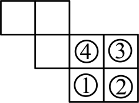
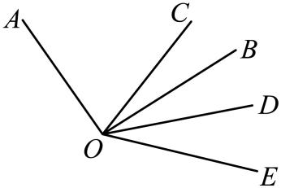
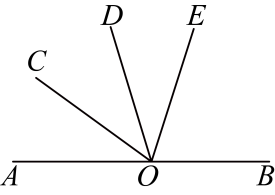
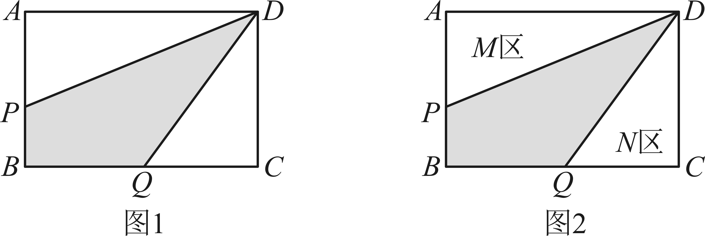

七年级数学上学期第二次月考·培优卷
【北师大版2024】
测试范围：第1章 丰富的图形世界~第4章 基本平面图形
姓名：___________班级：___________考号：___________
考卷信息：
本卷试题共26题，单选10题，填空6题，解答10题，满分150分，限时120分钟。本卷题型针对性较高，覆盖面广，选题有深度，可量化学生的掌握程度！
一、选择题（本大题共10小题，每小题4分，满分40分）
1．（25-26七年级上·辽宁丹东·期中）若单项式−4xm+3y与5x2yn−4是同类项，则mn的值是（ ）
A．1 B．−1 C．−4 D．−5
2．杨老师到几何王国去散步，刚走到“角”的家门，就听到∠A、∠B、∠C在吵架，∠A说：“我是48°15′，我应该最大!”∠B说：“我是48.3°，我应该最大!”．∠C也不甘示弱：“我是48.15°，我应该和∠A一样大!”听到这里，杨老师对它们说：“别吵了，你们谁大谁小，由我来作评判!”，杨老师评判的结果是（ ）
A．∠A最大 B．∠B最大 C．∠C最大 D．∠A＝∠C
3．（25-26七年级上·江苏南京·期中）下列各数−28，−−15，0，−−6.1，−22中，负数的个数有（ ）
A．1个 B．2个 C．3个 D．4个
4．（25-26七年级上·河北张家口·期中）如图，裁掉一个正方形后能折叠成正方体，但不能裁掉的是（ ）

A．① B．② C．③ D．④
5．（24-25七年级上·内蒙古巴彦淖尔·期末）有下列说法：①由许多条线段连接而成的图形叫做多边形；②多边形的边数是不小于4的自然数；③从一个多边形（边数为n）的同一个顶点出发，分别连接这个顶点与其余与之不相邻的各顶点，可以把这个多边形分割成(n−2)个三角形．其中正确的有（ ）
A．0个 B．1个 C．2个 D．3个
6．如图，已知点C是AB上一点，AC=15cm，BC=23AC，若点D、E分别为AC、AB的中点，则DE的长为（ ）
A．5cm B．7.5cm C．10cm D．12.5cm
7．（25-26七年级上·河北廊坊·期中）当a是整数时，整式a3−5a2+9a+5+5−4a+5a2−a3一定是( )
A．3的倍数 B．4的倍数 C．5的倍数 D．7的倍数
8．（25-26六年级上·上海·期中）下表是某水库一周内水位高低的变化情况（用正数记水位比前一日上升数，用负数记水位比前一日下降数）．则本周星期（ ）水位最低
星期 | 一 | 二 | 三 | 四 | 五 | 六 | 日 |
水位变化/米 | +0.12 | −0.02 | −0.33 | +0.20 | −0.08 | −0.02 | +0.32 |
A．二 B．三 C．五 D．六
9．（25-26七年级上·黑龙江哈尔滨·期中）已知abcd>0，b<0，c>0，bcd<0，则（ ）
A．a>0，d<0 B．a<0，d>0
C．a>0，d>0 D．a<0，d<0
10．（24-25七年级上·河北沧州·期中）如图1，点A，O，B依次在直线MN上；如图2，现将射线OA绕点O沿顺时针方向以每秒2°的速度旋转，同时射线OB绕点O沿逆时针方向以每秒4°的速度旋转，设旋转时间为t秒（0≤t≤90）．下列说法正确的是（ ）

A．当t值为10秒时，∠AOB=100°
B．整个运动过程中，不存在∠AOB=90°的情况
C．当∠AOB=60°时，两射线的旋转时间t一定为20秒
D．当t值为36秒时，射线OB恰好平分∠MOA
二、填空题（本大题共6小题，每小题4分，满分24分）
11．把一根木条钉牢在墙上，至少需要2颗钉子，这是因为 ．
12．若m2+3mn=5，则7m2−3mn−−15mn+3m2= ．
13．（25-26七年级上·北京延庆·期中）一个有理数a满足a<0且a<2，写出一个满足条件的有理数a的值 ．
14．已知∠AOB=2∠BOC，若∠BOC=45°，则∠AOC= ．
15．如图，线段AB和线段CD的公共部分是线段BD，且BD=13AB=14CD，点E、F分别是AB、CD的中点，若EF=10，则BD的长为 ．
16．如图，已知OA⊥OB，点O为垂足，OC是∠AOB内任意一条射线，OB，OD分别平分∠COD,∠BOE，下列结论：

①∠COD=∠BOE；
②∠AOE与∠BOE互补；
③∠BOE=∠AOC；
④∠AOC与∠BOD互余，
其中正确的有 ．（只填写正确结论的序号）
三、解答题（本大题共10小题，满分86分）
17．（6分）（25-26七年级上·湖南郴州·期中）计算：
(1)23−6×−3+2×−4
(2)15−32×13+8÷−23
18．（6分）（24-25七年级上·广东肇庆·期中）已知代数式A=2x2+5xy−7y−3，B=x2−xy+2
(1)求A+5B的值；
(2)若A−2B值与x的取值无关，求y的值．
19．（6分）（25-26七年级上·贵州黔东南·期中）无人驾驶技术逐步走向成熟，在今年7月无人驾驶网约车在我国各个城市开始试运营．无人驾驶网约车在东西走向的道路上运行，往东行驶的路程记作正数，往西行驶的路程记作负数．全天行程的记录如下（单位：km）：6，−5，−2，7，5，−6，9，−5，−7，8．
(1)当无人驾驶网约车将最后一位乘客送到目的地时，距出发地点的距离为多少千米？
(2)若无人驾驶网约车每公里耗电0.12度，电费单价0.5元/度，问该网约车当天消耗电费多少元？
20．（8分）（24-25七年级上·重庆·期末）已知线段AB=a（如图），延长BA至点C，使AC=2AB，延长AB至点D，使BD=12AB．
(1)请按上述要求画全图形；
(2)求线段CD的长（用含a的代数式表示）；
(3)若E是CD的中点，AE=3，求a的值．
21．（8分）（25-26七年级上·四川成都·阶段练习）如图，是由多个小正方体组合成的立体图形，每个小正方体棱长为1 cm．

(1)分别画出从正面、左面、上面观察到的图形；
(2)如果将这个立体图形表面涂上红色（底面不涂），则需要涂色的表面积为多少？
22．（8分）已知点A，O，B在同一条直线上，OC平分∠AOD，∠AOC=36°．

(1)求∠BOD的度数；
(2)若∠DOE:∠BOE=1:2，求∠BOE的度数．
23．（8分）如图，B是线段AD上一动点，沿A→D→A以每秒2cm的速度往返运动1次，C是线段BD的中点，AD=10cm，设点B的运动时间为t秒0≤t≤10．
(1)当t=3时，AB=______cm，CD=______cm；
(2)用含有t的代数式表示运动过程中AB的长；
(3)在运动过程中，若AB的中点为E，则EC的长度是否发生变化？若不变，求出EC的长：若变化，请说明理由．
24．（10分）（25-26七年级上·四川成都·期中）【问题背景】
如图1，有一长BC=15，宽AB=10的长方形电脑屏幕，动点P以每秒2个单位从A向B运动，同时点Q以每秒a0<a<5个单位从B向C运动，设点P的运动时间为t秒，连接DP,DQ．
【初步探究】
（1）当t=32，a=4时，求四边形DPBQ的面积
（2）当a为何值时，四边形DPBQ的面积与t的取值无关：
【拓展提升】
（3）如图2，若点P每运动1秒，电脑屏幕的M区显示的结果就会自动加上2，同时N区的结果会自动将整个代数式乘以2，且均显示化简后的结果．已知M,N两区初始显示的分别是x2−2x和524x2−14x+78，若t=3，试比较M区、N区显示的结果哪个大，并说明理由．

25．（12分）（24-25七年级上·全国·期末）已知，OC是∠AOB内部的一条射线，且∠AOB=3∠AOC．

(1)如图1所示，若∠AOB=120°，OM平分∠AOC，ON平分∠AOB，求∠MON的度数；
(2)如图2所示，∠AOB是直角，从点O出发在∠BOC内引射线OD，满足∠BOC−∠AOC=∠COD，若OM平分∠COD，求∠BOM的度数；
(3)如图3所示，∠AOB=x°，射线OP，射线OQ分别从OC，OB出发，并分别以每秒1°和每秒2°的速度绕着点O逆时针旋转，OP和OQ分别只在∠AOC和∠BOC内部旋转，运动时间为t秒．
①直接写出∠AOP和∠COQ的数量关系；
②若∠AOB=150°，当∠POQ=23∠BOP，求t的值．
26．（14分）（24-25七年级上·四川眉山·期中）如图，已知数轴上两点A,B对应的数分别为−1、3，点P为数轴上一动点，其对应的数为x．

(1)（填空）若点P从B开始向左移动6个单位长度，则x=______．若点P向左移动到与点A距离3个单位长度时，则点P对应的数是______．
(2)（填空）当点P从点B以每秒3个单位长度的速度向右移动，则t秒后P点表示的数是______，此时若将数轴折叠，使−1与3表示的点重合，则点P与数______表示的点重合（用含t的式子表示）；
(3)若点P从A点出发沿数轴的负方向移动，速度为每秒1个单位长度，同时点Q从B出发同向移动，速度为每秒3个单位长度，设运动时间为t，在移动过程中，是否存在某一时刻t，使得点Q与点P之间的距离QP等于2个单位长度，若存在，请求出t的值；若不存在，请说明理由．